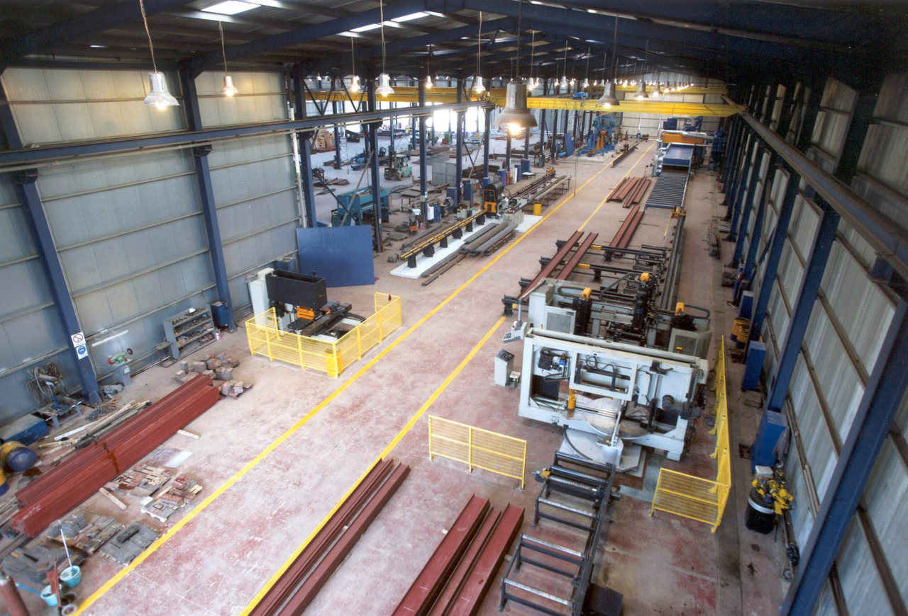
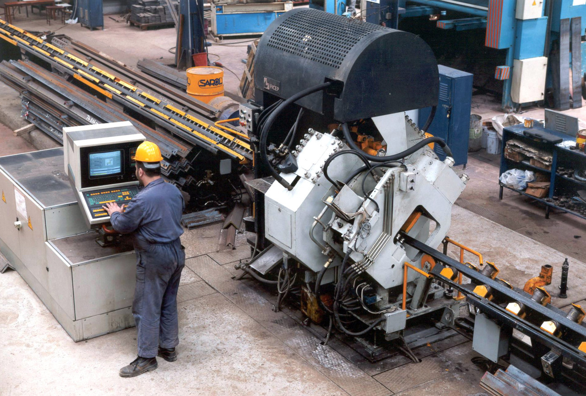
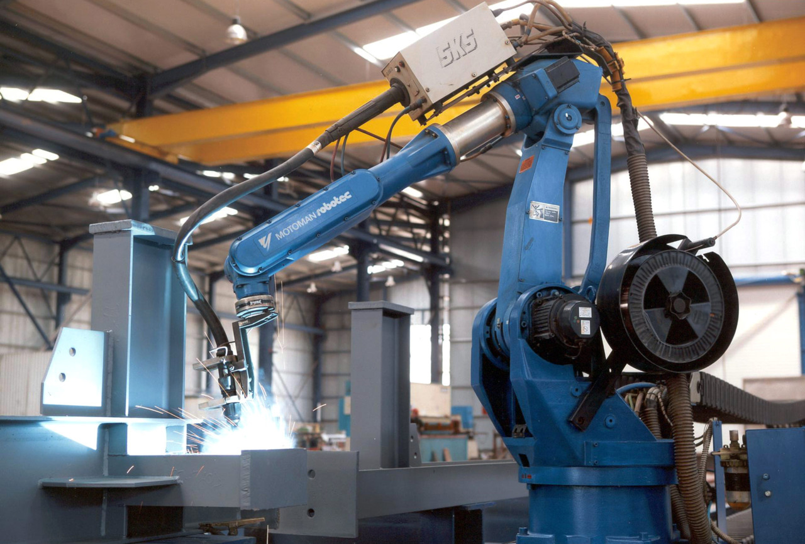
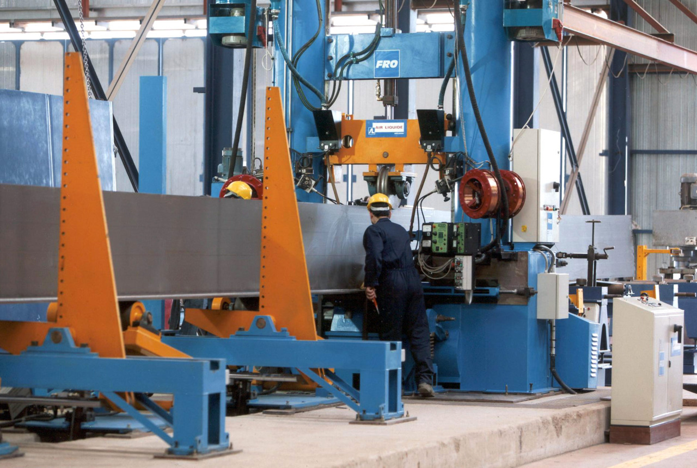

Οι εγκαταστάσεις μας
Η εταιρεία μας είναι εγκατεστημένη σε ένα υπερσύγχρονο ιδιόκτητο εργοστάσιο μεταλλικών κατασκευών με πιστοποίηση ISO στα Οινόφυτα Βοιωτίας. Οι τεχνολογικές δυνατότητες του εργοστασίου μας περιλαμβάνουν:
- Υψηλή ημερήσια παραγωγική δυνατότητα (30 τόνοι μορφοσιδήρου)
- Υψηλή ακρίβεια κατά τη διαδικασία κατασκευής
 Εσωτερική όψη του εργοστασίου της Σύμμικτον Α.Ε.
Γραμμές Παραγωγής
Αυτόματα μηχανήματα υψηλής τεχνολογίας μας δίνουν τη δυνατότητα να αναλάβουμε ευρεία γκάμα μεταλλικών κατασκευών που απαιτούν παραγωγή συγκολλητών διατομών ή κοινών διατομών μορφοσιδήρου.
Οι εγκαταστάσεις μας είναι οργανωμένες σε 6 ανεξάρτητες γραμμές παραγωγής:
Γραμμή Παραγωγής Δοκών (“Beam Line”)
Αυτοματοποιημένη κοπή, διάτρηση και σήμανση μεταλλικών δοκών με πλάτος διατομής εως 1,200 χιλιοστά. Η ακρίβεια των μηχανημάτων είναι +1/-1 χιλιοστό (μη-αθροίσιμη). Διάτρηση μπορεί να εκτελεστεί σε 3 άξονες ταυτόχρονα, με 8 επιλογές για τη διάμετρο των οπών.
 Το μηχάνημα κοπής, διάτρησης και σήμανσης μορφοσιδήρου
Το μηχάνημα κοπής, διάτρησης και σήμανσης μορφοσιδήρου
Κοντινή όψη της 3-αξονικής κεφαλής διάτρησης
Γραμμή Διάτρησης (“Punching Line”)
Αυτοματοποιημένη κοπή, διάτρηση και σήμανση μεταλλικών πλακών και γωνιών. Η γραμμή περιλαμβάνει τα εξής μηχανήματα τύπου CNC:
- Μηχάνημα διάτρησης μεταλλικών γωνιών (“Angle Punching”) για διατομές από 40 x 40 χιλιοστά εως 160 x 160 χιλιοστά
- Μηχάνημα διάτρησης μεταλλικών πλακών (“Plate Punching”) για διαστάσεις εως 1000 x 800 x 25 χιλιοστά
 Το μηχάνημα διάτρησης μεταλλικών γωνιών
 Το μηχάνημα διάτρησης μεταλλικών πλακών
Το μηχάνημα διάτρησης μεταλλικών πλακών
Γραμμή Ρομπότ (“Robot Line”)
Αυτοματοποιημένη συγκόλληση και κοπή μεταλλικών διατομών με χρήση plasma. Η γραμμή περιλαμβάνει ρομπότ τύπου Motoman (2001), με αισθητήρες σάρωσης χώρου και δυνατότητα μετακίνησης σε ράγες μήκους 12,000 χιλιοστών.
 Το ρομπότ συγκόλλησης και κοπής με χρήση plasma
Γραμμή Συγκόλλησης Δοκών (“Beam Welding Line”)
Αυτοματοποιημένη συγκόλληση μεταλλικών δοκών. Η γραμμή περιλαμβάνει μηχάνημα τύπου T-Master με διπλή κεφαλή συγκόλλησης (“submerged arc welding”). Το μηχάνημα έχει τη δυνατότητα συγκόλλησης διατομών ύψους εως 2,000 χιλιοστά και πλάτους εως 25,000 χιλιοστά.
 Το μηχάνημα τύπου T-Master
Το μηχάνημα τύπου T-Master
 Το μηχάνημα τύπου T-Master κατά τη συγκόλληση δοκού
Γραμμή Κοπής με Οξυγόνο & Plasma (“Oxygen & plasma cutting line”)
Αυτοματοποιημένη κοπή μεταλλικών πλακών με χρήση οξυγόνου & plasma. Η γραμμή περιλαμβάνει πλήρως αυτοματοποιημένο μηχάνημα με δυνατότητα κοπής πλακών πλάτους εως 3,5000 χιλιοστά και μήκους εως 16,500 χιλιοστά. Το μηχάνημα διαθέτει 5 ανεξάρτητες κεφαλές οξυγόνου και 1 κεφαλή plasma.
Γραμμή Αμμοβολής & Βαφής
Αυτοματοποιημένη αμμοβολή και βαφή με primer. Η γραμμή περιλαμβάνει μηχάνημα με δυνατότητα επεξεργασίας μορφοσιδήρου πλάτους εως 2,000 χιλιοστά και μήκους εως 6,000 χιλιοστά.
Το μηχάνημα αυτοματοποιημένης αμμοβολής και βαφής με primer.
Λειτουργία & Χωρητικότητα
Για να επιτύχουμε την πλήρη καθετοποίηση των 6 γραμμών παραγωγής, έχουμε δημιουργήσει το Τμήμα Σχεδιασμού Μορφοσιδήρου, με έμπειρους μηχανικούς και σχεδιαστές. Στο τμήμα αυτό, αναπτύσσουμε μοντέλα στο εξειδικευμένο πρόγραμμα Instant Steel, παράγουμε σχέδια στο Tekla Structures, και τα προωθούμε απευθείας στα CNC μηχανήματα. Με τον τρόπο αυτό, αυτοματοποιούμε την παραγωγή και ελαττώσουμε τα σφάλματα.
Οι εγκαταστάσεις μας επίσης λειτουργούν ως υπερσύγχρονο Service Center για κάθε εργολάβο μεταλλικών κατασκευών. Χρησιμοποιώντας τα ασύγκριτα πλεονεκτήματα του εξοπλισμού μας, κάθε εργολάβος μπορεί να επιτύχει χαμηλό κόστος παραγωγής και υψηλή ταχύτητα παράδοσης. Στη διεθνή αγορά, το μοντέλο των Service Centers είναι ιδιαίτερα δημοφιλές καθώς δίνει πρόσβαση σε μεταλλικές κατασκευές κορυφαίας ποιότητας, χωρίς να απαιτεί υψηλές επενδύσεις.
Το κορυφαίο έργο που ανέδειξε την υψηλή παραγωγική δυνατότητα των εγκαταστάσεων μας ήταν η κατασκευή του μεταλλικού σκελετού 10,500 τόνων για το Διεθνές Κέντρο Ραδιοτηλεόρασης (“International Broadcasting Center”) το 2002. Το έργο ολοκληρώθηκε σε 5 μήνες (Ιούλιος - Οκτώβριος 2002), με την εταιρεία μας να επεξεργάζεται πάνω απο 2,000 τόνους μορφοσιδήρου κάθε μήνα. Αυτό το επίπεδο ταχύτητας και αποτελεσματικότητας συνιστά μέχρι σήμερα ρεκόρ για την ελληνική αγορά μεταλλικών κατασκευών.